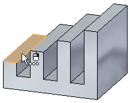
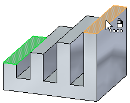
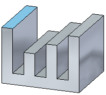
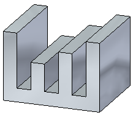

Define a relationship between two faces
You can define a wide variety of relationships between faces. This topic explains how to apply a coplanar relationship between two faces. You can apply other relationships in a similar manner.
-
On the Home tab→Selection group, choose the Select command
 .
. -
Position the cursor over the face you want to modify, and when it highlights, click to select it.

The Move command bar is displayed.
-
On the Home tab→Face Relate group, choose the Coplanar command
 . The Move command bar changes to a Coplanar command bar.
. The Move command bar changes to a Coplanar command bar. -
Select the target face. This is the face you want to remain stationary.

The face you selected in step 2 is moved temporarily so you can see the results.

-
On the coplanar command bar, click Accept.

-
You can set the Persist option on the command bar to specify that the relationship you applied is maintained if the model is modified later. Persisted relationships are added to the Relationships collector in PathFinder.
-
The Persist option is not available when relating faces between two parts in an assembly.
Learn more
Defining relationships between model facesLook up more details
Coplanar commandCoplanar relationship command bar
Concentric command
Concentric relationship command bar
Symmetry command
Symmetry relationship command bar
Offset command
Offset relationship command bar
Parallel command
Parallel relationship command bar
Aligned Holes command
Aligned Holes relationship command bar
Equal Radius command
Equal radius relationship command bar
Perpendicular command
Perpendicular relationship command bar
Tangent command
Tangent relationship command bar
Horizontal and Vertical command
Horizontal and vertical relationship command bar
Ground command
Ground relationship command bar
Rigid command
Rigid relationship command bar